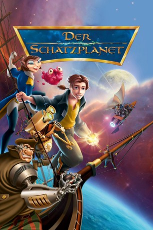

#2029 Der Schatzplanet
Alternativ: Treasure Planet
Auszeichnungen: für 1 Oscars nominiert
 
 IMDB-Wertung: 7.1 / 10
IMDB-Wertung: 7.1 / 10  Metascore: 60
Metascore: 60 
Seit seiner Kindheit träumt der junge Jim Hawkins von der Suche nach dem sagenumwobenen Planeten, auf dem der Pirat Flint einen Schatz versteckt haben soll. Als Jim durch Zufall in den Besitz einer Schatzkarte gelangt, beginnt das größte Abenteuer seines Lebens. Jim ist sicher: irgendwo am Ende des Universums liegt der Schatzplanet. Daher bricht er zusammen mit dem Astronom Dr. Doppler auf. Auf der Weltraumgaleone “Legacy” schließt er schnell Freundschaft mit dem Schiffskoch John Silver, einem Cyborg. Doch dann übernimmt Silver das Kommando auf dem Schiff, denn er will den Schatz für sich alleine haben.
Jahr: 2002
Dauer: 95 Minuten
FSK: 6
Land: USA Studio: Buena Vista PicturesTonspuren: DD5.1 - ,
Untertitel:
Auflösung: 1080p (1824x1080) Größe: 4044 MB
Genre: Sci-Fi, Abenteuer, Animation/Trick, Familie, Liebe
Regisseur: Ron Clements, John Musker
Drehbuch: Robert Louis Stevenson, Ron Clements, John Musker, Rob Edwards, Ron Clements
Soundtrack: James Newton Howard
Darsteller:
Datei: X:\Kinder Disney HD\2000-2018\Schatzplanet, Der (2002, FSK6, 1824x1080).mkv seit 25.09.2015
Festplatte: Kinder-Filme+Trick
 Es gibt insgesamt 45 Filme in der Gruppe 'Kinder Disney HD\2000-2018'
Es gibt insgesamt 45 Filme in der Gruppe 'Kinder Disney HD\2000-2018'